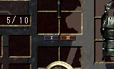
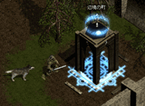
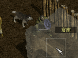

| 歩く |
|
マップ上の移動先の地面までマウスカーソルを持っていき左クリックすると、
キャラクターはその地点まで歩きます。
※標準の移動方法を走るように設定した場合は、Ctrlキーを押しながら左クリックすることで歩きます。 |
|
| |
|
走る |
マップ上の移動先の地面までマウスカーソルを持っていきCtrlキーを押しながら左クリックすると、
キャラクターはその地点まで走ります。
※標準の移動方法を走るように設定した場合は、何も押さずに左クリックすることで走ります。 |
|
| |
| 話す |
|
話したいキャラクター（町の人等）までマウスカーソルを持っていき左クリックすると、
そのキャラクターと話すことが出来ます。
キャラクターによっては会話中に選択肢が出てくる場合があります。
その場合は、選んだ選択肢を左クリックしてください。 |
|
| |
|
攻撃する |
攻撃したい敵までマウスカーソルを持っていき左クリックすると、
その敵に攻撃することができます。
ただし、敵に攻撃をするまえに自分が攻撃を受けたりすると自分の攻撃がキャンセルされてしまうことがあります。
※ボウガンを装備している場合は、攻撃したい敵にマウスカーソルを合わせ、
マウスの左ボタンを押しつづけることで、連続して攻撃することが出来ます。 |
|
| |
| 魔法を使う |
|
|
魔法を使う相手までマウスカーソルを持っていき右クリックすると、
その相手に魔法を使うことが出来ます。
ただし、魔法を使うには魔法を覚えていることが必要です。
さらに、使いたい魔法を魔法・攻撃メニューバーで選択してください。
また、魔法によっては使う相手を選ばない魔法もあります。（補助魔法等）
|
|
| |
|
魔法を切り替える |
使用したい魔法は 魔法・攻撃メニューバーで切り替えることが出来ます。
使用したい魔法のアイコンまでマウスカーソルを持っていき左クリックすると、
その魔法が選択され、使用可能になります。
また、キーボードのF1〜F9キーを押すことによっても使用したい魔法を選択することができます。 |
|
| |
| パワーアップする |
|
|
しばらく戦い続けていると、パワーアップボタンが光りだします。
そのときに、パワーアップボタンをクリックするとプレイヤーが一時的にパワーアップ状態になります。
パワーアップ状態になると、移動速度や攻撃力、魔法レベル等がその間だけ増加します。
キーボードの P キーを押すことによってもパワーアップ状態になることができます。
|
|
| |
|
三連続攻撃をする (第二話以降) |
|
三連続攻撃は剣士だけが使える技です。
魔法・攻撃メニューバーで剣のアイコンを選択すると、
右クリックでの攻撃が三連続攻撃になります。
また、魔法・攻撃メニューバーで剣のアイコンを選択しなくても、
左クリック＋右クリックで三連続攻撃が可能です。
|
|
| |
| 装備を切り替える (第三話以降) |
 |
|
プレイヤーは武器と盾のみ2種類装備でき、それらをプレイ中に切り替えて使用することが可能です。
アイテム画面の装備切り替えボタンを押すことで切り替えることが可能ですが、
キーボードのCapsLockキーを押すことでも切り替えることが出来ます。
詳しくは、こちらをご覧下さい。
|
|
| |
|
仲間の攻撃モードを変える |
|
仲間には攻撃モードというものがあり、ACTIVE と INACTIVE の二つの状態があります。
そのときの攻撃モードは画面左下の、仲間のHPゲージの側に表示されています。
仲間の攻撃モードは、仲間のHPゲージを左クリックすることで切り替えることが出来ます。
また、キーボードのスペースキーでも切り替えることが出来ます。
|
| ACTIVE |
自主的に戦います。
戦っている最中にプレイヤーが指示を出したときは、プレイヤーの指示に従います。
また、敵からも攻撃を受けます。
|
| INACTIVE |
自主的には戦いません。
プレイヤーが指示を出したときは、プレイヤーの指示に従います。
また、敵からは攻撃されません。 |
|
| |
| 仲間に突撃させる (第二話以降) |
|
|
仲間を敵に突撃させることによって敵に攻撃することが出来ます。
仲間を突撃させるには、仲間が近くにいる状態で、
突撃させたい方向にマウスカーソルを移動し、
キーボードのTABキーを押しながら右クリックしてください。
|
|
| |
|
仲間にジャンプさせる |
|
仲間にジャンプさせることによって、敵を蹴散らしたり、スイッチを押すことが出来ます。
仲間をジャンプさせるには着地させたい位置にマウスカーソルを移動し、
キーボードのTABキーを押しながら左クリックしてください。
|
|
| |
| 仲間のステータスを見る |
 |
|
仲間も独自のステータスパラメータを持っています。
プレイヤーは仲間のステータスを見ることが出来ます。
仲間のステータスを見るには、プレイヤーが仲間の近くまで寄って行った後、
マウスカーソルを仲間の上に移動し、
キーボードのTABキーを押しながら左クリックしてください。
|
|
| |
|
地雷を仕掛ける |
|
地雷を仕掛け、敵に踏ませることによってその周囲の広範囲の敵にダメージを与えることが出来ます。
敵が地雷を踏まなかった場合は、一定時間後に爆発します。
地雷を仕掛けるには、地雷を仕掛けたい位置までプレイヤーを移動し、
ゲームパネル上の地雷ボタンを押してください。
また、キーボードのBキーを押すことによっても地雷を仕掛けることが出来ます。
|
|
| |
| トランスポートを使用する |
|
|
トランスポート魔法を使用すると、近くの町まで一瞬で戻ることが出来ます。
また、戻った町からトランスポートを使用した地点に行くことも出来ます。
トランスポートを使用するには、魔法・攻撃メニューバーでトランスポート魔法の
アイコンを選択した後、フィールド上で右クリックしてください。
version 1.004.000 以降の場合、トランスポートの上にマウスカーソルを合わせると、そのトランスポート魔法を使用した人の名前が表示されます。
|
|
| |
|  |
ゲートを使用する |
|
ゲートを使用すると、過去に行ったことのあるゲートまで一瞬で移動することが出来ます。
ゲートを使用するには、ゲートの近くまでプレイヤーを移動し、
ゲートを左クリックしてください。
その後、移動可能なゲートの一覧が表示されますので、
移動したいゲート名を左クリックしてください。
|
|
| |
| 歩き・走りの操作を入れ替える |
|
|
初期設定では、標準の移動方法が歩きで、CTRLキーを押しながらの移動方法が走りになっていますが、
この移動方法を入れ替えて、標準の移動方法を走りにすることが可能です。
標準の移動方法を変えるには、ゲームパネル上の「RUN」ボタン、
または「WALK」ボタンを左クリックしてください。
「RUN」ボタンを押した場合は、標準の移動方法が走りに、
「WALK」ボタンを押した場合は、標準の移動方法が歩きになります。
|
|
| |
|
アイテムを拾う |
敵がアイテムを落としたり、町の人がアイテムをくれたりすることがあり、
そのアイテムを拾うと自分の物になります。
アイテムを拾うには、プレイヤーを拾いたいアイテムの近くまで移動させた後、
そのアイテム上にマウスカーソルを移動し、左クリックしてください。
ただし、持ち物がいっぱいでそれ以上持てない場合は拾うことが出来ません。 |
|
| |
| アイテムを捨てる |
|
|
アイテムを捨てるには、アイテム画面で捨てたいアイテムを左クリックし、
アイテムがマウスカーソルにくっついた状態で、フィールド画面上の
適当な場所にマウスカーソルを移動して、左クリックしてください。
アイテムを捨てても再度拾うことは可能です。
|
|
| |
|
アイテムを使用する |
タブレットやカプセル等、使用すると何か効果のあるアイテムがあります。
アイテムを使用するには、アイテム画面を開いた後、
使用したいアイテムまでマウスカーソルを移動し、右クリックしてください。
ベルトポケットに入れているアイテムも同様の方法で使用することが出来ます。
ベルトポケットに入れているアイテムはキーボードの1〜8キーでも使用することが出来ます。 |
|
| |
| アイテムを倉庫に送る |
|
|
アイテムは自分で所持する以外に、倉庫に保管しておくことも出来ます。
アイテムを倉庫に送るには、アイテム画面を開いた後、倉庫に送りたいアイテムを左クリックし、
アイテムがマウスカーソルにくっついた状態にしてください。
そして、アイテム画面の転送ボックスにマウスカーソルを移動し、左クリックしてください。
|
|
| |
|
仲間にアイテムを拾わせる |
落ちているアイテムは、自分で拾う以外に仲間に拾いに行ってもらうことも出来ます。
仲間にアイテムを拾いに行ってもらうには、落ちているアイテム上にマウスカーソルを移動し、
キーボードのTABキーを押しながら左クリックしてください。
ただし、持ち物がいっぱいでそれ以上持てない場合は拾うことが出来ません。 |
|
| |
| 装備する |
|
|
武器や防具等は手に入れた後、装備しなければ効果が得られません。
武器や防具等を装備するには、アイテム画面を開いた後、
装備したいアイテム上にマウスカーソルを移動し、アイテムがマウスカーソルに
くっついた状態にしてください。
そして、装備させたい場所までマウスカーソルを移動し、左クリックしてください。
装備品は役割（剣や盾等）によって装備できる場所が決まっています。
|
|
| |
|
装備品を修理する |
武器や防具を装備して戦っていると、だんだんと耐久力が下がってきます。
耐久力が0になってしまうと、その装備品が機能しなくなってしまいます。
しかし、装備品を修理することによって、耐久力を回復させることが出来ます。
装備品を修理するには、町の中にいる商人に話しかけ、修理を依頼してください。
※修理を請け負ってくれない商人もいます。 |
|
| |
| アイテムを鑑定する |
|
|
手に入れたアイテムに「?」アイコンがついている場合は、
アイテムの鑑定が必要であるということを意味しています。
鑑定が必要なアイテムは、鑑定しなければ装備することが出来ません。
アイテムを鑑定するには、町の中にいる商人に話しかけ、鑑定を依頼してください。
一度鑑定してもらうと、倉庫の中にあるアイテムも全て鑑定されます。
※鑑定を請け負ってくれない商人もいます。
|
|
| |
|
スイッチを切り替える |
遺跡や塔等の中にはスイッチを使った仕掛けが施されている場所があります。
スイッチを切り替えるには、スイッチの近くまでプレイヤーを移動した後、
スイッチを左クリックしてください。 |
|
| |
| 頭脳スイッチを切り替える |
|
|
遺跡や塔等の中には頭脳スイッチを使った仕掛けが施されている場所があります。
頭脳スイッチを切り替えるには、頭脳スイッチの近くまでプレイヤーを移動した後、
マウスの左ボタンを一定時間押しつづけてください。
カウントが0になればスイッチが切り替わります。
|
|
| |
|
扉を開閉する |
遺跡や塔等の中には扉が設置されている所があります。
扉を開閉するには、扉の近くまでプレイヤーを移動した後、
扉を左クリックしてください。
※鍵のかかっている扉もあります。
|
|
| |
| 転職する |
 |
|
転職することによって職業を変えることが出来ます。
転職するには、ステータス画面を開いた後、
「○○に転職」と書かれた部分を左クリックすることによって転職することが出来ます。
※いつでも転職できるわけではありません。
|
|
| |
|
ステータス画面を開く |
ステータス画面ではプレイヤーの各種能力や状態を確認することが出来ます。
ステータス画面を開くには、画面右下のステータスボタンを左クリックしてください。
また、キーボードのSキーを押すことによっても開くことが出来ます。 |
|
| |
| アイテム画面を開く |
|
|
アイテム画面ではプレイヤーが所持するアイテムの装備や整理を行うことが出来ます。
アイテム画面を開くには、画面右下のアイテムボタンを左クリックしてください。
また、キーボードの I (アイ)キーを押すことによっても開くことが出来ます。
|
|
| |
|
スペシャルアイテム画面を開く (第三話以降) |
スペシャルアイテム画面ではプレイヤー間の受け渡しが出来ない
特殊なアイテムを確認したり、使用したりすることが出来ます。
ステータス画面を開くには、アイテム画面を開いた後、
右図の場所にあるスペシャルアイテム画面ボタンを押した下さい。
また、キーボードのXキーを押すことによっても開くことが出来ます。 |
|
| |
| 魔法画面を開く |
|
|
魔法画面ではプレイヤーが使用可能な魔法を確認したり、
魔法・攻撃メニューバーに魔法を割り当てたりすることが出来ます。
魔法画面を開くには、一旦ステータス画面を開いた後、
ステータス画面上部の「MAGIC」タブを左クリックしてください。
また、キーボードのMキーを押すことによっても開くことが出来ます。
|
|
| |
|  |
倉庫画面を開く |
|
倉庫画面を開くと、保管しているアイテムを取り出したり、
所持しているアイテムを保管したりすることが出来ます。
倉庫画面を開くには、町の中にある倉庫の近くまでプレイヤーを移動し、
倉庫を左クリックしてください。
|
|
| |
| ミッションリスト画面を開く |
|
|
ミッションリスト画面ではプレイヤーが依頼されているミッションや、
既にクリアしたミッションの内容を見ることが出来ます。
ミッションリスト画面を開くにはゲーム設定メニューを開いた後、
「ミッションリストを見る」を左クリックしてください。
|
|
| |
|
マップ画面を開く (第二話以降) |
|
マップ画面を開くと、今までに行った場所の縮小地図を見ることが出来ます。
また、オンラインモードでは他のプレイヤーの位置を縮小マップ上で確認することも出来ます。
マップ画面を開くには、ゲーム設定メニューを開いた後、
「マップを見る」を左クリックしてください。
また、キーボードのNキーを押すことによっても開くことが出来ます。
|
|
| |
| ヘルプ画面を開く |
|
|
ヘルプ画面では各ショートカットキーの説明を見ることが出来ます。
ヘルプ画面を開くにはゲーム設定メニューを開いた後、
「ヘルプを見る」を左クリックしてください。
|
|
| |
|
スクリーンショットを撮る |
|
ゲーム中の画面をスクリーンショットとしてビットマップファイルに保存することが出来ます。
スクリーンショットを撮るにはキーボードの Print Screen キーを押してください。
撮られたスクリーンショットはシャドウフレアをインストールしたフォルダの中の
"ScreenShot"フォルダに保存されます。
|
|